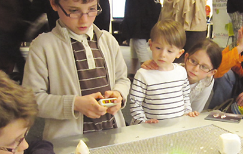
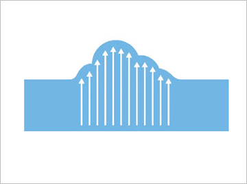
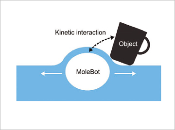
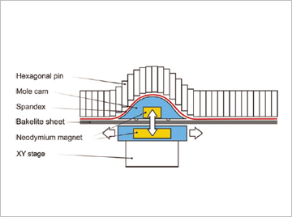
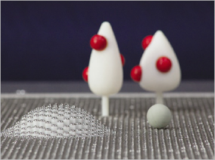

Report by Subjects
Report by Subjects
KAIST RESEARCH ACHIEVEMENTS
MoleBot: Organic User Interface-based Game Robot
Department of Industrial Design Woohun Lee
Summary
Based on the idea of ubiquitous computing, in the future, it is expected that computer-supported human activities with desktops or laptops could be done more efficiently even with ordinary objects. Everyday objects in the future would involve computing power and organic user interfaces (OUIs), with which users can interact. Traditional GUIs have been confined to a flat rectangular screen, but OUIs would be completely embedded in everyday objects and implemented based on the tight coupling of bits and atoms. In consequence, OUIs should be organic or malleable, rather than flat or fixed. They can transform depending on a user's needs and on interaction scenarios just like the compliant rod, which is a magical weapon possessed by the monkey king Sun Wukong in the Chinese classic novel, Journey to the West.
R&D Report
 Figure1. Exhibition at Laval Virtual 2012 (children are playing with the MoleBot using joysticks)
The MoleBot project is a pioneering study that addresses the technical problems of previous OUIs and it is proposed as a practical application for gaming. When we compared the MoleBot concept with previous shape-shifting OUIs, MoleBot was distinguished because it is an independent agent that interacts kinetically with users and objects, rather than being a passive shape display. The MoleBot table contains more than 15,000 physical pixels so it provides an extraordinary visceral experience and allows playful kinetic interactions. Based on our experience of the implementation process and empirical studies, we suggest that the MoleBot concept could evolve into an interactive gaming table or a kinetically informative tabletop interface.
OUI is a new type of user interface that includes nonplanar displays, which can change shape actively or passively via analog physical inputs. In contrast to the ultimate vision for OUI, the current standard of the shape-shifting OUI remains quite rudimentary due to the constrained expressiveness and resolution of physical pixels. We have tried to address these technical problems, and we propose a practical application for gaming based on the OUI concept. People usually stare at a screen in a sitting posture while enjoying video games. However, we considered that the interactive physicality of shape-shifting OUIs will help users to engage more actively with gaming, which would facilitate their physical movements and social interactions among players.
A rigid yet flexible surface with higher resolution actuated pixels
Many previous studies of shape displays for OUIs, such as Feelex, Lumen, and Relief, adopted the principle of a pinscreen where the shape display involved hundreds of pins that were actuated separately via an elaborate mechanism. MoleBot required a combination of higher actuation speed, greater resolution, and smaller pixels than found in previous projects, as well as the addition of higher kinetic interactivity with objects on the table surface. Thus, we devised a rigid yet flexible surface with physical transformability using a two-dimensional translating cam known as Molecam, which used 15,000 close-packed hexagonal pins that were equivalent to cam followers, and there was a layer of spandex between the Molecam and the pins to reduce friction. As the Molecam moves on the xy plane, the hexagonal pins create a linear motion in the direction of gravity like a cam follower. As a result, the movement of the head of the actuated xy stage can be transmitted to the Molecam and then on to the pins, thereby generating an organic physical deformation of the rigid table surface. We propose that MoleBot can be a new game platform rather than a general shape display. People can build a small world on the table similar to a game board by replacing the hexagonal pixels with different types of small game pieces and enjoy the playful kinetic interactions between the MoleBot and objects in the real world. MoleBot can interact with physical objects in two different ways. It can either push objects on the table via the force from the Molecam or pull objects sensitive to magnetism using the neodymium magnet in the Molecam. We employed a KinectTM as an input device to allow spatial interactions with the MoleBot table. The KinectTM was installed 1.5 meters above the MoleBot table where it captured the user?? body and objects on the table. The data from KinectTM included vertical depth information and the horizontal xy coordinates so we utilized user gestures or the presence of objects as inputs for the MoleBot system, which allowed users to interact with the MoleBot in a natural way.
Reconfigurable physical game world and gesture-based interaction
 Figure 2. Traditional shape display
 Figure 3. Robotic creature based on actuated pixels
 Figure 4. Sectional view of the MoleBot table
 Figure 5. Interactive kinetic game: fruit picking'
Research Funding
National Research Foundation of Korea for two years (No.327-2009-1-G00046), i.e., 62 million won in total research funds.
Research Results
- Exhibition: SIGGRAPH 2011 Emerging Technologies and Laval Virtual 2012(http://vimeo.com/24155036).
- Award: The Grand Prix du Jury Laval Virtual Award in 2012.
- Patent pending: one patent filed in Korea
- Publication: Woohun Lee, Narae Lee, Ju-Whan Kim, Myeongsoo Shin and Jungsoo Lee. 2013. MoleBot: An Organic User-Interface-Based Robot That Provides Users with Richer Kinetic Interactions. Interacting with Computers, 25(2), 154-172.